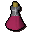

Red spiders' eggs
| Config name | red_spiders_eggs |
| Item id | 223 |
| Value | 7 gp |
| Weight | 7g |
| Members | No |
| Tradeable | Yes |
| Stackable | No |
| Defined in | scripts/skill_herblore/configs/brewing/potions_additives.obj |
Red spiders' eggs
Eewww.
Show 9 ground spawns on the world map → Open in knowledge graph →
Used to make
| Skill | Level | XP | Ingredients | Tool | How | Where | Makes |
|---|---|---|---|---|---|---|---|
| Herblore | 22 | 62.5 | use on item | members | |||
| Herblore | 63 | 142.5 | use on item |  Super restore(3)members |
Ground spawns
| Area | Coordinates | Level | Count | Map |
|---|---|---|---|---|
| Agility Arena (underground) | 2832, 9586 | 0 | 1 | view |
| Monastery (underground) | 3117, 9951 | 0 | 1 | view |
| Monastery (underground) | 3118, 9948 | 0 | 1 | view |
| Monastery (underground) | 3119, 9949 | 0 | 1 | view |
| Monastery (underground) | 3126, 9958 | 0 | 1 | view |
| Monastery (underground) | 3128, 9956 | 0 | 1 | view |
| Monastery (underground) | 3129, 9954 | 0 | 1 | view |
| Palace (underground) | 3177, 9880 | 0 | 1 | view |
| Palace (underground) | 3179, 9881 | 0 | 1 | view |
Referenced in scripts
scripts/_test/scripts/cheats/cheat_bank.rs2scripts/areas/area_varrock/scripts/apothecary.rs2scripts/minigames/game_agilityarena/scripts/agilityarena_tickettrader.rs2scripts/skill_herblore/scripts/brewing/brew_potion.rs2